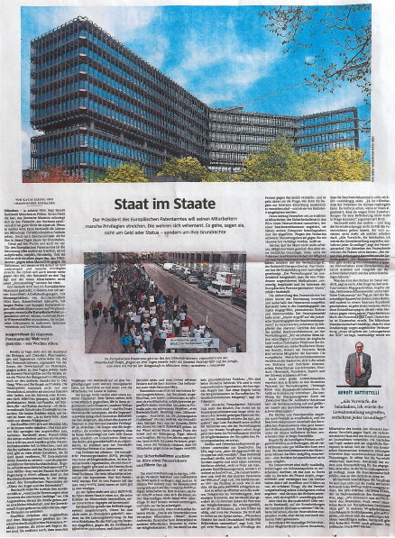

11.04.15
A State Within a State: Süddeutsche Zeitung Article About the EPO’s Bizarre Existence Above the Law

Summary: A belated translation into English of a long article about lawlessness at the EPO, or the law of monarchy, where Battistelli is the monarch
LAWLESSNESS at the EPO will be this month’s theme in Techrights, so we wish to go back and retrieve information of relevance. Süddeutsche Zeitung published an article titled “Uprising in the Realm of the Sun King” (Battistelli) in November of last year. Another article, titled “A state within a state” (or “Staat im Staate“), was published a month later.
Here is the translation into English:
Süddeutsche Zeitung, 20/21 December 2014, Wirtschaft
A state within a state
The President of the European Patent Office wants to remove some of his employees’ privileges. They are vehemently opposing him. It’s not, they claim, about money or status – it’s about their fundamental rights.
BY KATJA RIEDEL AND CHRISTOPHER SCHRADER
Munich – Benoît Battistelli’s office looks out over Munich. Beneath him flows the Isar, the German Museum huddles on the bank of the river, and, on a clear day, the Alps can be seen on the horizon. When night falls, Battistelli can see the glistening lights of Munich’s Christmas markets. But he is probably not inclined towards contemplation these days.
“He [Battistelli] is dubbed “The Sun King” by many.”In the corridors and on the pavement outside the European Patent office, the mood is anything but peaceful: it is indignant, outraged, hostile. And it is directed chiefly against him, the President, against his excessive power, against the reforms that are turning working life at the office on its head and abolishing certain privileges. It is also directed increasingly against Battistelli’s management style, which many employees find unpalatable. He is dubbed “The Sun King” by many.
Which explains why staff at the European Patent Office are now striking, at this office with its luxurious working conditions, monthly salaries averaging 7600 euros, complete with tax immunity, and long holidays and extremely generous social benefits. For 40 years, the European Patent Organisation has offered high earnings and benefits as the carrot to attract highly-qualified scientists with the skills to understand and assess technical documents in several languages.
“On three days consecutive days recently, more than a thousand patent examiners have taken to the streets in the demonstrations organised by Suepo, the trade union at the Patent Office.”The strike by biologists and chemists, pharmacologists and engineers has now been dragging on for 15 days. On three days consecutive days recently, more than a thousand patent examiners have taken to the streets in the demonstrations organised by Suepo, the trade union at the Patent Office. That number equates to roughly a quarter of the staff in Munich, and there have also been protests in other locations in The Hague, Vienna and Berlin. The patent examiners do not all hail from Germany; they have also come to Munich from Spain, Italy, Switzerland and Sweden – 38 member states all told. Most of them moved here with their family, with children many of whom – at the Patent Office’s expense – attend the international schools or kindergartens. They were brandishing signs proclaiming: “Yes to reforms. But not with this President”.
“And for the first time, lawyers from big patent law firms are siding with the employees, in the wake of Battistelli’s decision to oust a patent judge from his role and ban him from the premises.”The conflict has been dragging on for months, escalating all the while. And for the first time, lawyers from big patent law firms are siding with the employees, in the wake of Battistelli’s decision to oust a patent judge from his role and ban him from the premises. In Munich, there are many of these law firms in the vicinity of the European and German Patent Office which make their money by securing patents for companies – and fighting their case in court if necessary. Lawyer Tilman Müller-Stoy of the firm of Bardehle Pagenberg, writes in an open letter to the Federal Ministry of Justice that a “climate of fear and intimidation” prevails among staff at the European Patent Office.
Battistelli refutes this: he accuses the lawyers of making “rash assessments without any knowledge of the relevant facts”. The employees who are taking to the streets are, he says, a small minority and the trade union Suepo is primarily concerned with justifying its own existence.
Conflicts between the employees and the management are something of a historical tradition at the European Patent Office, say some who have been there from the beginning. They also say that some of Battistelli’s predecessors kept piling on privileges to appease conflicts and keep employees happy.
The latest dispute, however, is a different beast: Two sides are locked in an impasse, their arguments not just shades but worlds apart, with each accusing the other of things that the opposite party categorically denies. Battistelli is on a mission to make the Office operate more efficiently and remove certain privileges. Suepo and the striking employees, however, are adamant that this isn’t about money or status, but fundamental rights. Such as the right to join a trade union, strike and obtain legal assistance when accusations are made against them.
“Suepo and the striking employees, however, are adamant that this isn’t about money or status, but fundamental rights.”The problem with all of this is: the European Patent Organisation (EPO), supported by its 38 member states, is an international organisation which issues its own rules and is not bound by the laws of its member states – it is a state within a state. Its 7000 employees work at four locations. And their significance is growing: in 2013 the Office granted almost 67,000 patents, an increase of more than 15,000 compared with 2009.
Battistelli has been in charge since 2010. His management style is described as dictatorial by his critics but as resolute by his supporters.
Battistelli has radically overhauled the promotion system, which is no longer tied to length of service, but to performance. He has introduced new guidelines for the examination of patents which the striking employees oppose on the grounds that they are too perfunctory and make it increasingly difficult to spot errors. This is a fear shared by many patent attorneys.
Particularly contentious is the internal investigation procedure introduced by Battistelli to enable the office to internally ascertain whether an employee has potentially violated guidelines, whether with respect to formalities or by committing a more serious offence such as corruption, bullying or defamation. The “Investigation Guidelines” were written by Florian Andres, a friendly, bearded man from Switzerland. He will be retiring at the end of the year. Photos of his grandchildren and the Eiger, Mönch and Jungfrau mountain range adorn the walls in his office. Up until three years ago, says Andres, there was no formal procedure for suspected violations of internal rules by an employee.
“At the start of December, employees say, the Security department marched into the office of a patent judge who is a member of a Board of Appeal, seized a computer and led him away.”In order for an investigation to be launched, there must be a suspected violation and at least one piece of evidence, says Andres. If this is the case, the evidence is secured and accused employees’ computers are accessed. Only after that are the data viewed. The accused is permitted to be present when that happens. However, he or she is not allowed to bring a lawyer and does not have the right to remain silent, even if this would incriminate him or her. “This is different to the German civil service”, concedes Andres. But, he says, it is no different to civil service procedure in many of the member states. Battistelli does not consider this a fundamental problem. “We aren’t a German authority. We are part of an international organisation that has its own rules. And the member states laid down these rules in the European Patent Convention”, says the President.
German Vice-President Raimund Lutz takes a similar view. For many years Lutz, a lawyer, was responsible among other things for the intellectual property department at Federal Ministry of Justice. Battistelli is an “excellent” representative of the office, says Lutz, who is at last implementing the reforms that the Administrative Council has long been demanding of his predecessors. The 38 member states of the European Patent Organisation are represented on the Administrative Council.
Strikes and trade union protests have always been part and parcel of the EPO’s history, says Lutz, “but the group has become noticeably more aggressive.” In his view, the fact that Battistelli is standing firm, not making any concessions to his critics and even refusing an external mediator is not indicative of poor conflict management skills; in fact, he believes it is to Battistelli’s credit. “We are coming under fire from the industry because we are the world’s most expensive patent office,” says Lutz. The fees are three to five times as high as in the USA. Battistelli, he says, is successfully tackling these issues.
“The President of the Patent Office does not have the authority to remove a member of the Board of Appeal from office; this is the preserve of the Administrative Council, which ranks above Battistelli.”This view is clearly shared by the other delegates on the Administrative Council, the only body that ranks above Battistelli: in the summer, the representatives of the member states re-elected him by 36 out of 38 votes – a year ahead of schedule and in spite of all the protests. He is to remain at the helm until 2018. “Like other countries, Germany has also supported Battistelli’s reform programme”, says Lutz. However, the protest against Battistelli has been gathering momentum for more than a fortnight and the issue at stake is how the rules on internal investigation are to be understood in practice – and whether they are adhered to by Battistelli.
At the start of December, employees say, the Security department marched into the office of a patent judge who is a member of a Board of Appeal, seized a computer and led him away. Apparently, he has been banned from entering the premises on suspicion of serious misconduct – and has not been allowed to work since. There may not have been any legal basis for this course of action. The President of the Patent Office does not have the authority to remove a member of the Board of Appeal from office; this is the preserve of the Administrative Council, which ranks above Battistelli. The Council only retroactively approved the decision: “The Administrative Council has explicitly found that the measures ordered by the President were “necessary, justified and in the interests of the European Patent Organisation”, states Battistelli.
“Battistelli, argue the judges and patent attorneys, violated the autonomy of the justice system.”The dismissal of the patent judge unleashed a storm of discontent within and outside the Patent Office. Battistelli, argue the judges and patent attorneys, violated the autonomy of the justice system. In a letter to the Administrative Council, 35 members of the Office’s most senior committee, the Enlarged Board of Appeal, wrote that the Patent Office boss is guilty of a “clear challenge to the judicial independence of the Boards of Appeal”. “We condemn this action without hesitation”, write English Lord Justice Christopher Floyd and the Advocate-General at the Dutch Supreme Court, Robert van Peursem. Both are external members of the Board. The European Convention on Human Rights forbids executives from interfering in the work of judges and courts, they say. High-ranking judges from Sweden, Finland, Denmark, Romania, Cyprus and Switzerland concurred with this view.
Two large law firms also wrote letters to the German representative on the Administrative Council, Christoph Ernst of the Federal Ministry of Justice. One of these letters states: “The exercising of disciplinary authority by the “Executive” over the “Judicial” powers at the Office violates the separation of powers and presents a huge threat to the judicial nature of the Boards of Appeal.”
“The Patent Office Boards of Appeal have the authority to make a final decision on these disputes and those decisions are not eligible for subsequent review.”The strength of feeling displayed by judges and patent attorneys is partly a reflection of the special role fulfilled by the Boards of Appeal within the European patent system. Their members, among them the judge who was escorted off the premises, decide on contentious patent cases.
For the companies involved, property rights to inventions are at stake, which are often worth millions or even billions of euros. The Patent Office Boards of Appeal have the authority to make a final decision on these disputes and those decisions are not eligible for subsequent review.
The patent judges are responsible for deciding on disputes surrounding rights to protection: whether the Office rightly or wrongly granted, restricted or refused a patent. In this role, the judges deal with lawyers and examiners. They become party to matters that do not concern their employer’s administrative department – and that are entrusted to judges because they are ostensibly independent.
“Or is Battistelli seeking to exert influence over the decisions of the Boards of Appeal?”But are they really? Or is Battistelli seeking to exert influence over the decisions of the Boards of Appeal? The debate was already raging before the patent judge was suspended, but it has now gained even more momentum.
In an expert opinion, former constitutional judge Siegfried Broß criticises the lack of genuine autonomy of the Boards of Appeal. “It is clear that the President is able to discipline the judges. He merely has to point out to them that, because of their decisions, they are no longer eligible for a promotion,” argues Broß.
Battistelli sees it differently – and dismisses out of hand the reproaches concerning the handling of the patent judge, who, for the time being, is not allowed to fulfil that role: “There is absolutely no basis for the accusations that I am violating the separation of power,” says the Patent Office boss. He argues that the authors of the remonstrative letters are not aware of the facts: “In this case, it is quite clearly not about the autonomy of the Boards of Appeal. The only issue at stake is the suspected serious misconduct of an individual person who could damage the reputation and integrity of the Boards of Appeal and of the Office.”
“The rumours surrounding Topić centre on alleged corruption during his time as head of the Croatian patent office; Croatian newspapers wrote about vanishing funds and official vehicles.”There is no mention of the detailed accusations made against the judge by the Office. However, Battistelli has written in his blog that it involves “disseminating defamatory and injurious documents”. On the day that the accused was banned from the premises, Battistelli also wrote in an internal circular that there was another issue involving a smear campaign that had been ongoing against one of his Vice Presidents for many months: the Croat Željko Topić. That’s why the house ban was imposed. The Munich Public Prosecution Office confirms that it has received a complaint about the alleged defamation “of a member of the EPO’s management”, in which an employee of the office is incriminated. Accusations against Topić have been circulating for months, spreading at the office and also being sent anonymously to journalists. The rumours surrounding Topić centre on alleged corruption during his time as head of the Croatian patent office; Croatian newspapers wrote about vanishing funds and official vehicles. Topić himself has repeatedly denied the accusations.
Furthermore, Battistelli has issued a formal statement supporting him. But now that the complaint about defamation has been made, the Public Prosecution Office must investigate the reasons behind the rumours.“Outwardly, Battistelli still appears relaxed. But the political pressure is mounting”Meanwhile, as well as the courts, Berlin’s political circles have got involved in the debate about goings-on at the Office. SPD politician Christian Flisek, who has a seat on the Legal Affairs Committee of Germany’s parliament, says: “As the parliament of the country in which the office is based, the issues concern us, even though German law does not apply at the European Patent Office.” In other member states, such as the UK, there are petitions that the competent ministers must deal with. Outwardly, Battistelli still appears relaxed. But the political pressure is mounting.
Strikes have been going on for several weeks at the world’s most expensive patent office
The Security department turned up at the office of a patent judge and escorted him off the premises
BENOÎT BATTISTELLI
“There is absolutely no basis for the accusations that I am violating the separation of powers.”
The European Patent Office is in turmoil: for three days in a row, more than a thousand patent examiners took to the streets in the demonstrations organised by trade union Suepo, which is roughly a quarter of the staff in Munich.
Since this article was published Željko Topić lost his case in a court of law and a new campaign to discredit the judge was launched, not over rumours about Željko Topić but something totally unrelated and for the time being unsubstantiated. No wonder Siegfried Broß is still upset. █


 Content is available under CC-BY-SA
Content is available under CC-BY-SA